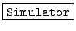
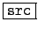
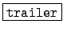
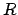
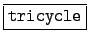
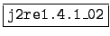

: 三輪車のシミュレーション
: 三輪車とトレーラーのシミュレータ について
: ヘルプメニュー
本シミュレータは次のようなディレクトリ構成(Windowsの場合)となっている．
-

- Simulator.bat シミュレーションプログラム用の
スクリプト(バッチファイル)
- Simulator.jar シミュレーションのクラスライブ
ラリ
- Simulator.lnk シミュレーション用のショットカッ
ト
- flag.mm シミュレーションフラグファイル
- trail.exe トレーラー用のシミュレーションプロ
グラム (MaTX 実行ファイル)
- trailer.gif トレーラー用の画像ファイル
- tri.exe 三輪車用のシミュレーションプログラム
(MaTX 実行ファイル)
- tricycle.gif 三輪車用の画像ファイル
- tyre.gif 三輪車のタイヤの画像
-

数値シミュレーションプログラム
(MaTX)のソースファイルディレクトリ
-

トレーラーのシミュレーション結
果とパラメータを保存するためのディレクトリ
- Q.mat 行列
 のデータファイル
のデータファイル
- R.mat 行列

のデータファイル
- data.mat シミュレーション結果のデータ
ファイル
- init.mat 初期値のデータファイル
- pole.mat 極のデータファイル
- tf.mat シミュレーション時間のデータファ
イル
-

三輪車のシミュレーション結果と
パラメータを保存するためのディレクトリ
- Q.mat 行列のデータファイル
- R.mat 行列のデータファイル
- data.mat シミュレーション結果のデータ
ファイル
- init.mat 初期値のデータファイル
- pole.mat 極のデータファイル
- tf.mat シミュレーション時間のデータファ
イル
-

Java プログラムを実行するための
プログラムディレクトリ (JRE)
注：SolarisやLinuxの場合は，シミュレーションプログラム用のスクリプトファ
イル名はSimulator.shとなっている．
Shigeki Nakaura
平成15年3月17日